öiō × CIID workshop
This project was made during a CIID workshop with Matteo Loglio and Bjørn Karmann from öiō studio.
The focus was working hands-on with AI & ML to explore Ambient Intelligence.
The main concept was: Thinking homes.
AI and ML can bring objects to life, making them react and adapt to different stimuli from both the users and the environment.
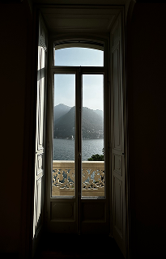
villa 1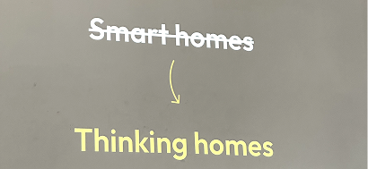
concept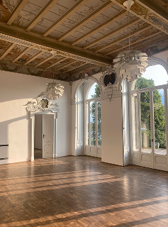
villa 2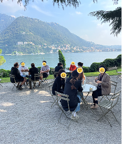
lunch breakOur first task was to look around the place, find some objects, give them a name, write some background stories about them.
Then, my teammate and I chose one object, and got assigned a random story.
Finally, our goal was to bring it to life with AI tools, and any material we could get our hands on.
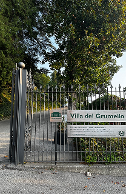
villa del Grumello, Como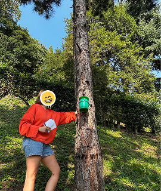
Ania & what was that?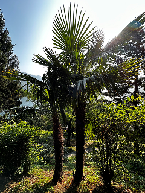
Paolo & Tess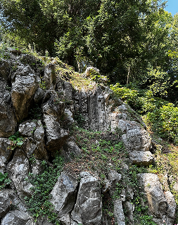
a natural chair… maybe?My teammate and I ended up bringing to life a statue of Ugo Foscolo — with PTSD.
Ugo Foscolo, Italian poet
A road was nearby, and many small planes were taking off and landing on the lake; those noises became the PTSD triggers.
To visually express fear, we added one animated arm using an Arduino UNO R4 and a servo motor (leaving the statue untouched). Since he was a poet, we also gave him a voice through a bluetooth speaker.
When noise levels were high, the statue covered its face and recited poems with a custom voice. The performance ended, with the help of ML and a webcam, when someone hugged the statue.
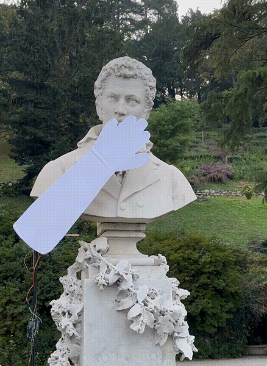
Ugo Foscolo's statue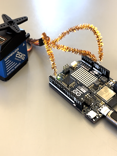
Arduino UNO R4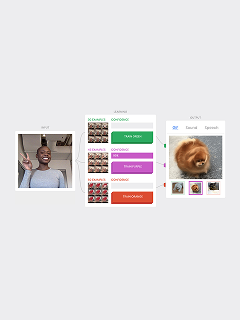
Teachable Machine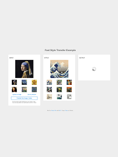
ml5.js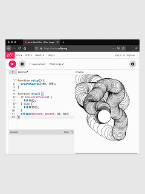
p5.js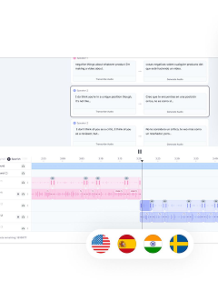
ElevenLabs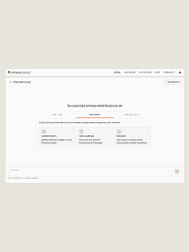
CohereThe statue behaves like a small state machine, sensing through a laptop's mic and webcam, with ML running locally in the browser (Teachable Machine + p5.js):
- Listen — ambient noise is continuously classified on-device
- Trigger — loud noise (planes, traffic) wakes the statue
- Perform — a servo-driven arm covers its face (Arduino UNO R4, over WiFi) while it recites poems through a BT speaker
- Release — when the webcam recognizes a hug, the performance ends
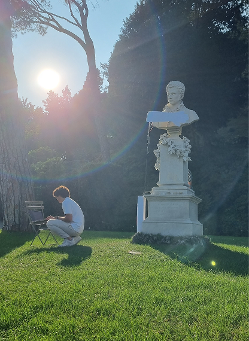
final demo- AI can turn seemingly intricate interactions with objects into natural experiences — the interface disappears into the environment.
- On-device ML is far more accessible than expected: training and running a model no longer requires a research team.
- AI tools amplify a designer's reach, but only with a clear intent: they execute, they don't decide.
- Designing interactions that live in physical space — timing, sound, movement — is a different craft than screen design, and I want to do more of it.
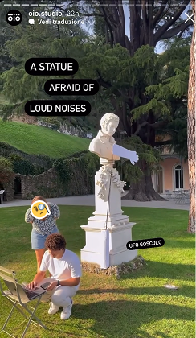
öiō studio's story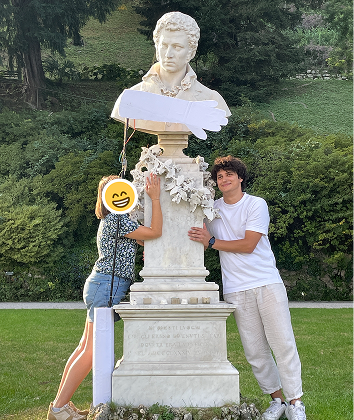
the end